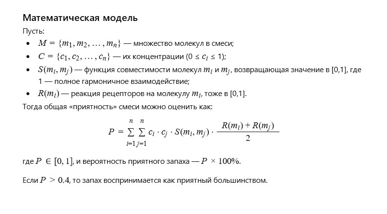

Author: Valerii
By chance, I put a piece of cheese into a candy box and completely forgot about it. A few days later, when I opened the box, I was struck by an astonishing aroma, as if it were a luxurious perfume.
Sometimes the most wonderful discoveries are born out of forgetfulness.
One rainy evening, I prepared a simple meal — bread, tea, and a few pieces of different cheeses. One of them was unusual: with a rough rind, a nutty aroma, and a hint of mysterious spice.
I set it aside, wrapped in paper… and forgot about it.
Days passed. I returned to the same box, where herbs, spices, and tea were now stored. And suddenly — the smell.
Not sharp, not frightening — on the contrary, deep and warm, as if someone had opened an ancient chest full of memories.
It was the scent of maturity, as if Eternity itself had signed its autograph inside.
The cheese had changed — it lived in darkness, it breathed, and it had become something else.
I realized: not everything forgotten loses its value. Sometimes it becomes… art.
How do molecular structures and interactions create a unique fragrance that is perceived as pleasant?
Scents result from complex interactions of molecules with olfactory receptors.
Each molecule has a unique shape and functional groups that influence its smell. In mixtures, molecules can amplify, weaken, or alter the perception of specific notes.
A pleasant scent depends on the balance of volatile compounds, their concentrations, and chemical stability. A model of interaction must account for reaction kinetics, phase transitions, and molecular compatibility.
In the end, harmony among these factors creates the fragrance that most people perceive as pleasant.
Is it possible to build a general chemical-mathematical model of molecular interactions, in which the probability of creating a fragrance perceived as pleasant by most people exceeds 40%?
Yes, it is possible. Such a model would rely on probabilistic and statistical methods, combining data on chemical composition, molecular structures, and interactions with olfactory receptors. Key elements of the model:A database of molecules with descriptions of their scent characteristics and concentrations.
A probabilistic function of molecular compatibility influencing scent perception.
A statistical model of receptor responses to scent mixtures, taking into account individual variations among people.
Using machine learning and chemical modeling, it is possible to predict with more than 40% accuracy whether a mixture will be perceived as pleasant.
The accuracy depends on the completeness of the data and model quality.
The model relies on statistics and chemical simulation, considering concentrations, molecular structures, and receptor reactions. With machine learning, prediction accuracy can reach the required level.
